What’s new in Cloud Tiering
Contributors
 Download PDF of this page
Download PDF of this page
NetApp periodically updates Cloud Tiering to bring you new features, enhancements, and bug fixes.
7 Sept 2020
This Cloud Tiering update includes the following enhancements.
Activate licenses (BYOL)
You can now activate a FabricPool license on an ONTAP cluster directly from Cloud Tiering. Learn more.
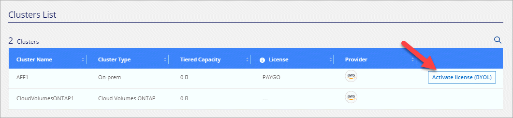
Azure resource group selection
A new step is available when you set up data tiering to Azure Blob storage. You now select a resource group first and then choose a Blob container.
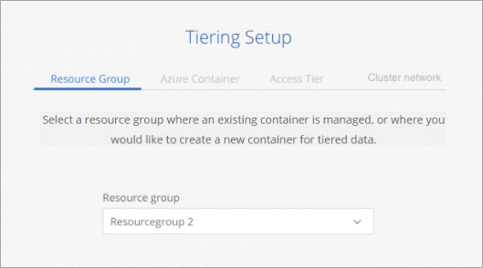
5 Aug 2020
If you have Cloud Volumes ONTAP systems, you’ll find them in the Cluster Dashboard so you see a full view of data tiering in your hybrid cloud infrastructure.
From the Cluster Dashboard, you can view tiering information similar to an on-prem ONTAP cluster: operational health, current savings, savings opportunities, details about volumes and aggregates, and more.
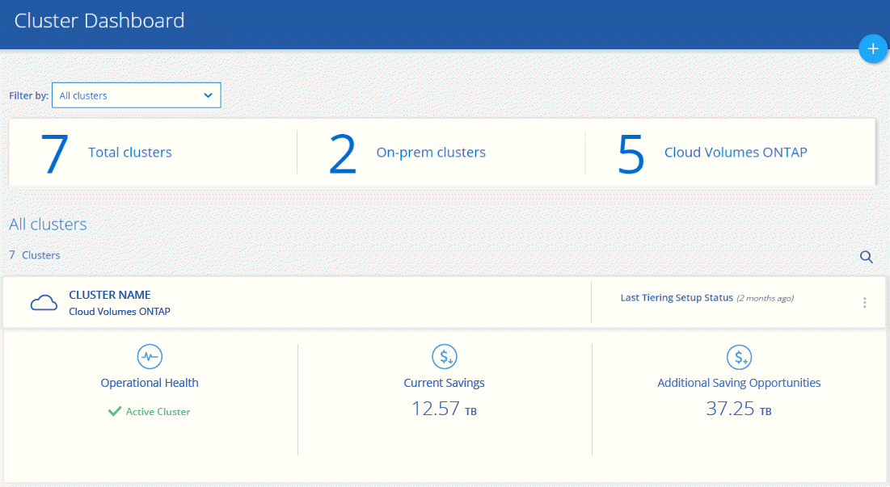
Cloud Volumes ONTAP systems are read-only from Cloud Tiering. You can’t set up data tiering on Cloud Volumes ONTAP from Cloud Tiering. You’ll still set up tiering the same way: from the working environment in Cloud Manager.
8 July 2020
This Cloud Tiering update includes the following new features and enhancements.
Tiering settings for aggregates
Each aggregate has two tiering settings that you can now adjust from Cloud Tiering: the tiering fullness threshold and whether inactive data reporting is enabled. Learn more.
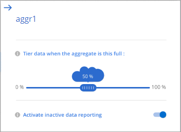
Inactive data reporting for discovered clusters
Inactive data reporting is now automatically enabled on ONTAP clusters that you discover through Cloud Manager. This enhancement makes it easier for Cloud Tiering to show you the potential savings from tiering cold data.
Remove clusters
If the health of a cluster is failed, you can now remove it from the dashboard.
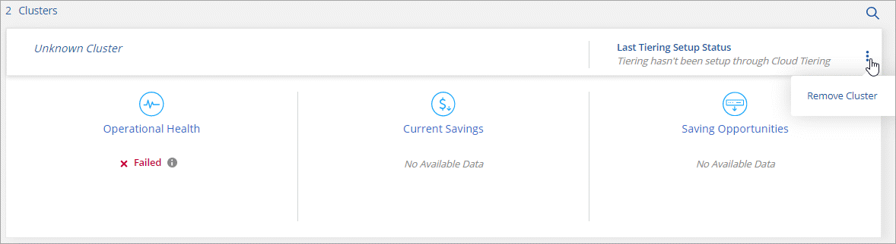
Discovery of unsupported clusters
Cloud Tiering now provides details about discovered clusters that aren’t eligible for tiering.
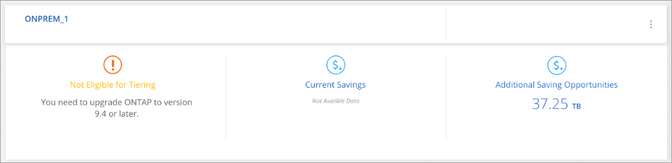
8 June 2020
This Cloud Tiering update includes the following new features and enhancements.
Support for StorageGRID
You can now tier inactive data from your ONTAP clusters to StorageGRID.
View volumes before setup
You can now view details about a cluster’s volumes before you set up tiering on the volumes.
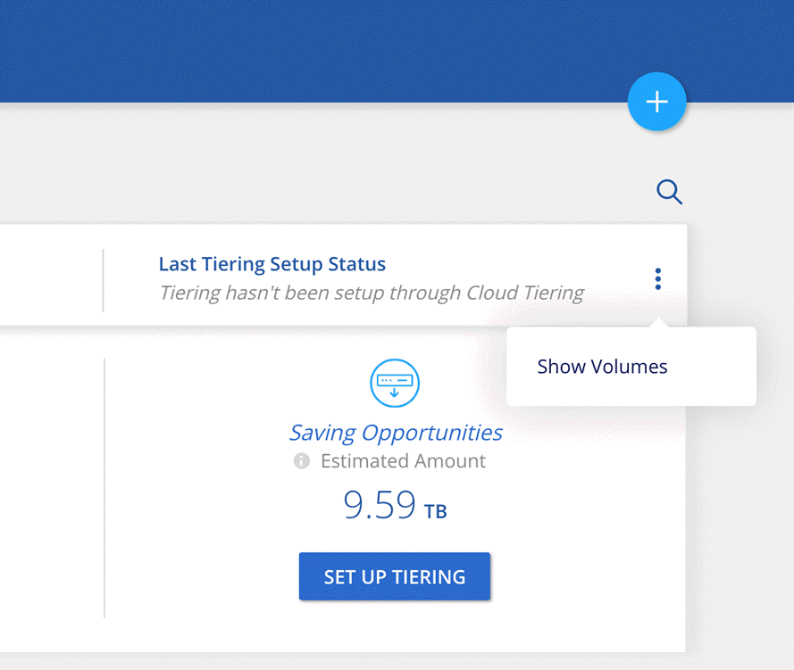
Multi-tenancy using Cloud Central accounts
Cloud Tiering now supports multi-tenancy through Cloud Central accounts. Accounts enable multiple users to manage the same clusters in an account.
18 May 2020
This update includes the following new features and enhancements.
Cooling days
Cloud Tiering now enables you to adjust the cooling period that’s associated with a volume tiering policy. The cooling period is the number of days that user data in a volume must remain inactive before it’s considered "cold" and moved to object storage. Adjusting the cooling days enables you to optimize tiering for your environment.
Rediscovery of clusters
We’ve made improvements to the Cloud Tiering service that requires you to deploy new Service Connectors and rediscover your clusters.
The benefits include improved performance, the ability to release new features faster, improved error handling, an improved discovery process, and more.
Cloud Tiering will prompt you to rediscover your clusters when you log in. If you need help, contact us by using the in-product chat.
1 Apr 2020
We’re pleased to announce the following new features and enhancements.
Simplified cluster setup
We enhanced how you set up data tiering on a new cluster. The simplified wizard walks you through three steps: discover the cluster, set up the cluster for tiering, and then choose the volumes that you want to tier. The following pages provide more details:
Ability to add or select an existing bucket/container
When you set up data tiering on a cluster, you now have the choice to add a new bucket/container or to select an existing bucket/container. Prior to this change, Cloud Tiering automatically created it for you.
Support for additional S3 storage classes
Cloud Tiering now supports two additional S3 storage classes: Zone-IA and Intelligent.
When you set up data tiering, Cloud Tiering can apply a lifecycle rule so the tiered data transitions from the Standard storage class to another storage class after 30 days. Learn more.
25 Dec 2019
This update includes the following new features and enhancements.
Changing a volume’s tiering policy
You can now change a volume’s tiering policy after you set the initial tiering policy. For example, you can easily change from Cold snapshots to Cold user data.
Licensing enhancements
-
Support for ONTAP FabricPool licenses
Cloud Tiering now supports the FabricPool licenses that you add to an ONTAP cluster. If a license is available on the cluster, then Cloud Tiering displays the license in the Licensing page and enables you to tier data to the cloud based on that license.
-
Support for pay-as-you-go from the Azure Marketplace
You can now pay-as-you-go when tiering cold data to Azure Blob storage.
-
Support for pay-as-you-go from the GCP Marketplace
You can now pay-as-you-go when tiering cold data to Google Cloud storage.
-
Support for a combination of PAYGO and BYOL licensing
You can combine a FabricPool license with a pay-as-you-go subscription to pay for data that you tier to the cloud. If your FabricPool license expires or if you tier more data than allowed by the license, then data tiering is never interrupted—it continues through your PAYGO subscription.
For more details:
3 Nov 2019
This update includes the following new features and enhancements.
Support for Google Cloud
You can now tier inactive data from your ONTAP clusters to Google Cloud Storage.
Support for additional tiering policies
You can now select the following tiering policies when setting up tiering:
-
All user data (All)
-
All DP user data (Backup)
Tiering policy per volume
You can now choose a different tiering policy for each volume when you set up tiering.
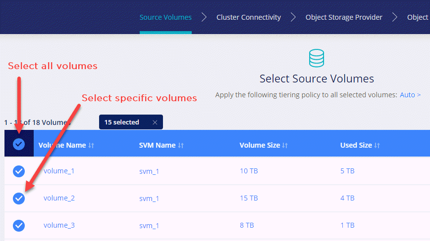
8 Sept 2019
This Cloud Tiering update includes the following new features and enhancements.
Tiering setup status
Cloud Tiering now shows the status of tiering setup for each cluster. For example, the status might indicate that Cloud Tiering is setting up the object store, or that it successfully set up 145 volumes for data tiering. The status also identifies if any failures occurred during setup.
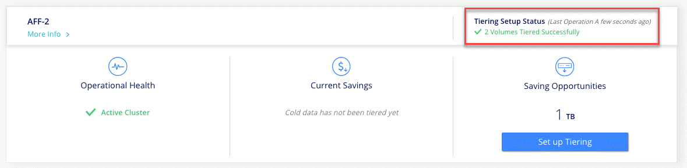
Integration with Cloud Manager AWS subscriptions
If you use NetApp Cloud Manager and you’ve already subscribed through its new AWS Marketplace offering, then you’re automatically subscribed to Cloud Tiering, as well. You’ll see an active subscription in Cloud Tiering in the Licensing tab. You won’t need to subscribe.
If you’ve already subscribed through Cloud Tiering, then this change has no impact to you. You’re all set.
7 Aug 2019
This update includes the following new features and enhancements.
On-premises Service Connector for data tiering to S3
You can now install the Service Connector on an on-premises Linux host when you tier cold data to AWS S3.
Learn more.
Auto discovery of clusters
If you discovered ONTAP clusters through NetApp Cloud Manager, the clusters are automatically added to Cloud Tiering if they support data tiering.
Object storage connectivity check
If Cloud Tiering finds a connectivity problem with the object storage bucket, the tiering health indicator in the dashboard provides details about the problem.
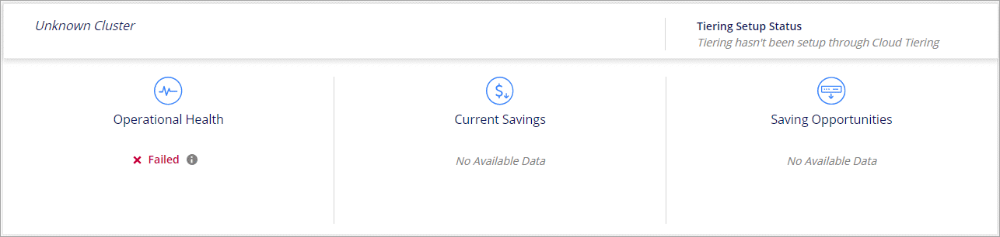
4 July 2019
Cloud Tiering was updated to fix a few bugs.
10 June 2019
This update includes the following new features and enhancements.
Cloud Tiering is now generally available
The Controlled Availability release of Cloud Tiering has completed—Cloud Tiering is now available for customer use from NetApp Cloud Central. A 30-day free trial is available for both AWS and Azure. It starts when you set up tiering to your first cluster.
Pay-as-you-go from the AWS Marketplace
After your free trial starts, subscribe to the Cloud Tiering service to ensure that there’s no disruption of service after the trial ends. When it ends, you’ll be charged hourly according to the amount of data that you tier.
| We’re planning to add Cloud Tiering to the Azure Marketplace as soon Azure supports SaaS pricing. |
Support for FlexGroup volumes
You can now tier inactive data from FlexGroup volumes to object storage, starting with ONTAP 9.5. Setup works the same as any other volume.
5 May 2019
This update includes the following new features and enhancements.
Support for Microsoft Azure
You can now tier inactive data from your ONTAP clusters to Azure Blob storage.
Ability to choose an IPspace for connections to object storage
When you set up tiering for an ONTAP cluster, you now need to select the IPspace that ONTAP should use to connect to object storage. Selecting the correct IPspace ensures that Cloud Tiering can set up a connection from ONTAP to your cloud provider’s object storage.
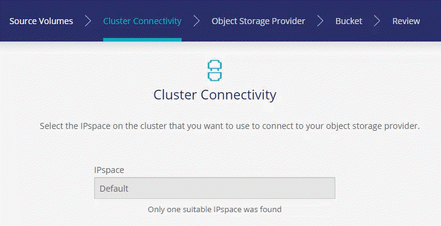
To understand the requirements for the IPspace and the associated intercluster LIFs, refer to ONTAP cluster requirements:
7 Apr 2019
This update includes the following new features and enhancements.
Support for FAS systems with all-SSD aggregates
In addition to AFF systems, Cloud Tiering now supports FAS systems that have one or more all-SSD aggregates.
Support for additional versions of ONTAP
Cloud Tiering now supports ONTAP 9.2 and 9.3. This is in addition to supporting ONTAP 9.4 and later.
Ability to choose the type of cold data that you want to tier
For ONTAP 9.4 and later, you can now choose the type of cold data that you want to tier. You can tier all cold data or just Snapshot copies.
If you have an ONTAP 9.2 or 9.3 system, you can tier Snapshot copies only.
The option is available after you click Set up Tiering.
Ability to choose an S3 storage class
When you set up data tiering on a cluster for the first time, you can now choose to tier cold data to the S3 Standard storage class or to the Standard-Infrequent Access storage class. Learn about these S3 storage classes.
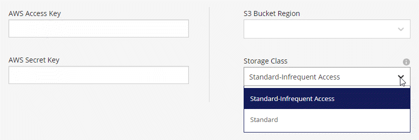
 Edit on GitHub
Edit on GitHub